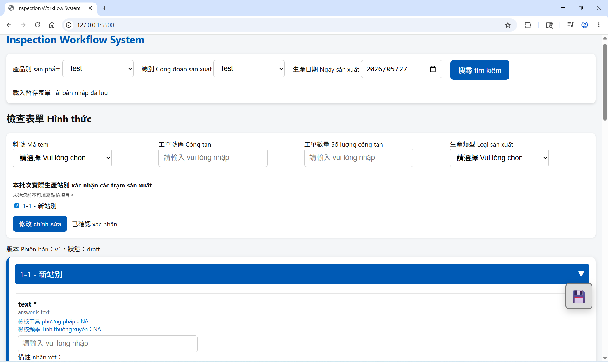
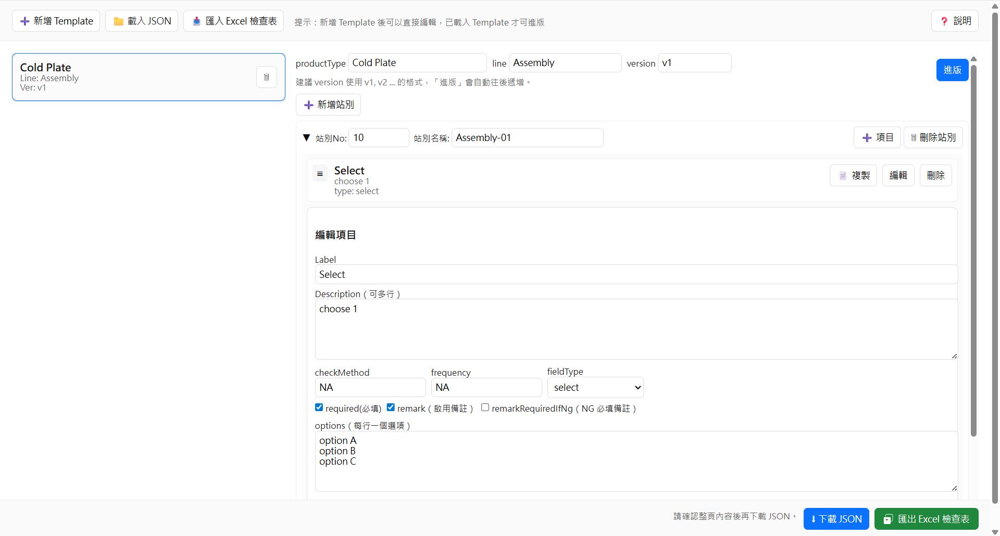
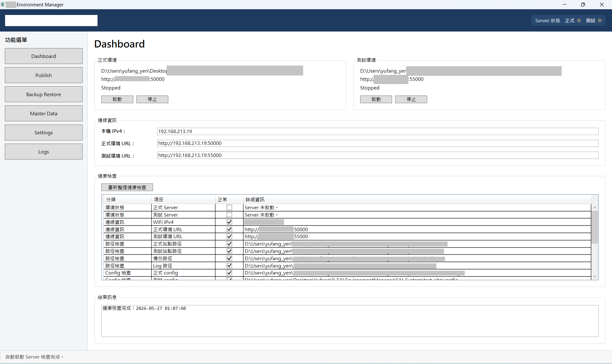

System Demonstration
Inspection (PWA)

Configuration

MTS (Teams + Power Platform)

Factory System Integration | OT + IT + MES
Building integrated factory systems connecting equipment, MES, and real-time data workflows
PWA | Power Platform | C# | WPF
About
I design and implement manufacturing systems that integrate equipment control, workflow automation, and MES systems into a unified architecture.
My experience spans equipment-level control (PLC interaction), Web API development, and MES integration — enabling real-time data flow from shopfloor operations to management systems.
With a background in Industrial Engineering, I focus on transforming real-world factory processes into structured, reliable, and maintainable systems.
My work emphasizes clear system boundaries, standardized workflows, and scalability — ensuring stable operation in real production environments.
A layered and event-driven architecture that captures equipment events, processes data through integration APIs, orchestrates workflow automation, and enables real-time monitoring and decision support.
Event-driven data flow from equipment to MES and monitoring layer, ensuring real-time visibility and decision support.
Captures real-time operational data
PWA (Inspection)
Transforms equipment signals into structured data
C# API / MES Communication
Automates processes and task coordination
Power Platform
Controls rules and data structure
Template System
Analyzes data and detects abnormal events
SPC Alert System (Planned)
Transforms PLC signals into structured events
Implements Web APIs for real-time integration
Ensures MES communication (HTTP / JSON)
Maintains data consistency across systems

Captures real-time production data from shopfloor operations
Ensures structured and validated input
Acts as the primary data source for system workflows

Defines system rules and validation logic
Supports flexible product configurations
Ensures standardized data structures

Maintains system stability and service control
Manages environment configuration
Supports long-term system operation
A closed-loop process connecting real-time event capture, system integration, workflow execution, and monitoring.
Issue reported via Teams or equipment event
Workflow triggered via Power Platform & API integration
Handled through PWA system and operational actions
Template ensures consistent data structure
SPC and KPI analyze abnormal conditions